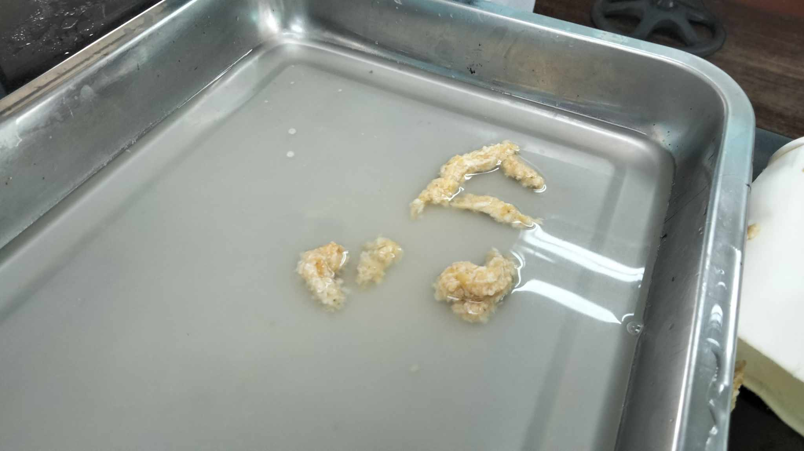

Biology Laboratory: Digestive System Simulation
Introduction
Becoming aware of how our body works has led humanity to advance further than any other creature. We’ve even studied our body enough to know how to make it survive in a suit in space. Isn’t that amazing?
But for us to advance, we must first survive. Our digestive system is extremely important to us since it's the system in charge of absorbing nutrients and providing us with the ‘fuel’ we need to work and do the most basic of tasks. If we’re too careless with it, we risk permanently damaging a vital part of our lives, and if we’re too ignorant, we won’t even know if certain symptoms are concerning or not.
Through this task, we can help ourselves visualize and understand our bodies’ digestive systems, and we can take a 'look; at the strange yet beautiful complexity of even the most common things in life. Like, for example, what happens to the food we consume?
Stages of Food Processing
Crushing Stage
During the crushing stage, as we put the bananas and crackers in the zip lock, we observed that they could be likened to the swallowed food being dropped into the stomach. This simulates the swallowing process, wherein the chewed food is swallowed and then travels down the esophagus before settling in the stomach awaiting digestion.
By adding water to the zip lock, we spotted the similarities of the function of the water to the role of saliva in digesting the food. Aside from assisting the food in traveling down the esophagus, saliva also has enzymes like amylase and lingual lipase to digest the starches and fats in our food.
While crushing the bananas, crackers, water, and lemon juice, we realized that the zip-locked bag represented the stomach. It simulated the mechanical and chemical digestion happening in the stomach, which broke down the food into smaller particles to prepare the small intestine for absorbing them.
We noticed that as we squished and squeezed the food, our actions strongly resembled the strong muscle contractions of the stomach which broke down larger particles into smaller ones which could be absorbed. It simulated how the muscle contractions crushed, churned, and mixed the gastric juices and food bolus together.
We realized the similarities between adding the orange juice and the stomach acids/gastric juice when we added it into the ziploc bag. The simulation represented the chemical digestion in the stomach and replicated how the stomach acid breaks down the extracellular matrix and shape of the food, which exposes peptide bonds, and then the protease, pepsin, destroys the bonds which have already been exposed. Proteins are broken down into smaller peptides due to this.
When we observed the food inside, we inferred that the bananas most likely had quite a lot of carbohydrates due to them being fruits, while the crackers also likely had high amounts of carbohydrates due to them being grain products.
Transfer Stage
By squeezing the stocking, we could observe that a liquid mixture flowed out of the stocking, while an unknown solid had remained in the stocking. The stocking worked almost like a filter in separating the solids and the liquid. This is most likely a simulation of the small intestine (the stocking) filtering the nutrients needed by the body (the liquid).
In our observations, the liquid could be seen to flow out of the stocking and onto the tray. As we had already established that the liquid represented the nutrients needed by the body, it is only logical to assume that they would flow into the body. Therefore, it is our belief that the tray represents the body.
As the liquid was filtered through the stocking, there was an unidentifiable solid left inside the stocking that solidified even more over time. We identified this to be the solid human waste that could not be digested and absorbed by the digestive system.

As we used the cups to push the partially solidified content out, we noticed that it bore a resemblance to the excretion of feces. The cup that contained the partially solidified content represented the rectum, while the hole at the bottom represented the anus, and the partially solidified content represented the waste product, feces. Pushing out the partially solidified content depicted the last stage of digestion, defecation, where the body pushes out indigestible matter which cannot be absorbed anymore.
Simulation of Absorption
We observed that the paper towel that absorbed the most amount of water was the paper that was folded three times. This was most likely because the more we folded the paper towel, the more surface area there was for the water to be absorbed into.
We took note of the fact that the small intestine was the organ that the paper towels most closely resembled. Since the small intestine has a large surface area due to its folds and wrinkles, it absorbs a lot of nutrients, much like the paper towel that absorbs more and more water as it folds.
Simulation of Bile Action

We observed that during the simulation, the container with the dishwashing liquid was foamy and bubbly with some sort of layer with paler liquid at the top. It seemed to be acting as an emulsifier to the water and oil, breaking the larger particles up to be mixed. We noticed that it was similar to how bile, like the dishwashing liquid, breaks down the ‘larger particles’, the fat, into smaller particles, the fatty acids, which can then be absorbed by the body. We believe that it is chemical digestion since it breaks down fats into fatty acids, helping the body absorb them.
Conclusion
Organisms are extremely complex, and even the basic act of consumption isn’t all that simple. Even putting food in our mouth isn’t simple! Our teeth have to physically tear things apart, our saliva has to protect our teeth and help us swallow, and our tongue has to form it into a shape easy enough for us to then make it move to the esophagus.
Our food is then chemically digested by our stomach, churning and mixing with stomach acid that could quite literally melt metal, and then it is moved slowly to the small intestine, where the majority of the absorption of nutrients and water takes place. It has to be long, wrinkly, and folded to just have enough surface area for food to be digested. Then, even after all that, the large intestine still has to remove as much water from the matter as possible, and only then will it be transferred to the rectum in the form of feces. Then, it comes out of the anus, and there you have it, poop!
But in all seriousness, it's extremely important for us to understand how our digestive systems work so we may pinpoint any issue whenever we have it. A ‘stomach flu’ could be your small intestine falling apart. A ‘bit of extra watery stool’ could be your large intestine not functioning properly. To see this with our own two eyes helps us visualize and understand our bodies better.